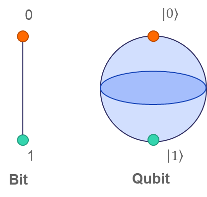
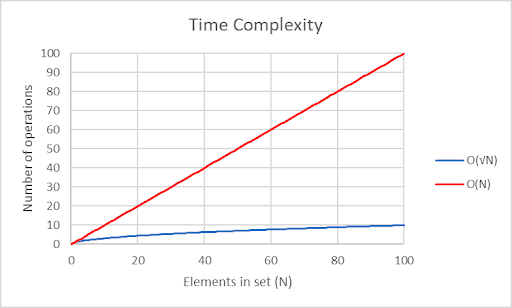

With AI's pervasive nature in the modern day, it is only suitable to theorize how it may
be expanded upon in the future: this paper was written to explore the integration of
Quantum Computing (QC) with Artificial Intelligence (AI), focusing on the basics of QC
like superposition and entanglement and how they can enhance AI's already abundant applications,
such as through the use of quantum algorithms and the generation of truly random numbers.
This is a brief overview of some of these methods and how they offer transformative solutions to
complex problems with modern computer science.
Introduction
The intersection of Quantum Computing (QC) and Artificial Intelligence (AI) combines a field
that is showing more and more prominence in every part of our lives - AI - and a field that,
while still under development, promises to push the boundaries of traditional computing by
introducing new ways to process and store information, revolutionizing the way we process data,
solve problems, and make decisions in ways that are unprecedented compared to the capabilities of
modern computers. This has already been discussed in many different papers that focus on more
specific scenarios (e.g. quantum game theory [Miakisz et al. (2006)]), however, this paper will
focus on a more general application of the two. By leveraging the behavior of subatomic particles
like photons and electrons, QC allows us to utilize unique phenomena like superposition and
entanglement, the fundamental applications of which will be explored and explained within this
paper. Additionally, the paper will explore the fundamental principles of QC and its significance
when applied to AI, such as through quantum algorithms like Grover’s [Grover (1997)] which make
complex AI computations such as pattern recognition much more efficient or its ability for true
random number generation, which causes a direct improvement to the performance in areas like
genetic programming [Yang and Jiao (2003)].
The Fundamentals of Computing and Quantum Computing
In traditional computing, the term ‘bit’ is used to describe the binary states of 1 or 0.
This is the very basis of how modern computers hold and process information, as the combination
of these bits can be used to store and manipulate a range of data such as characters or numbers.
However, QC utilizes quantum bits, also known as ‘qubits’ (coined by [Schumacher (1995)]),
which can be physically represented by multiple things, for example an electron in an atom or the
polarization of a photon. These qubits exist in a state of ‘superposition’. This means that they have
a probability or ‘relative weight’ of being either 0 or 1 and stay in this state until they are ‘measured’
- until this value is observed, where they collapse into either 1 or 0. This is shown by figure 1
where you can imagine an arrow spinning randomly between the 2 areas to indicate a state of superposition.
A simpler (though slightly less precise) way of thinking about it is to imagine a coin that has been
flipped into the air - until it lands (or is ‘measured’) it has the probability of being either heads
or tails. As well as this, the relative weight (or probability) of a state being reached can be manipulated
using quantum interference (the way quantum waves can combine to either amplify or cancel each other out),
which plays a key part in most quantum algorithms, such as in Grover’s Algorithm.
Another key feature of a qubit is its ability to become ‘entangled’ with one or more other qubits on a quantum
level. This means that the final outcomes when measured are mathematically related, for example, a pair of entangled
qubits might be entangled in a way that when they are measured they become the opposites of each other
(1 and 0 or 0 and 1). This is extremely useful as it allows the state of the other qubit to be determined wherever
the other is measured, a use of which is the ability to securely transfer information over any distance instantly.
Another use of quantum entanglement is the ability for parallel computation [Gruska (1999)]. In traditional computing,
this is done using the multiple cores of a standard computer, however, here it can use the unique properties of the qubit
instead, which means that a larger quantity of parallel computation can occur simultaneously. This is also put to use in
Grover’s algorithm, the importance of which is explained later in this paper.

Figure 1:A bit and a qubit
How can QC be applied to AI
While still mostly theoretical, QC has the potential to revolutionize AI in various ways. One example of this is through
the use of Grover’s Algorithm, which can search an unordered set of items in O(√N) time, which is very fast compared to a
standard unordered search which has a time complexity (how long it will take in a worst-case scenario) of O(N) where N = 2^n
(n being the number of items in the set). The time complexity of this is shown in figure 2. This is ideal for information
retrieval and pattern recognition from large collections of raw data, such as in facial or voice recognition where a match
needs to be quickly found from a large collection of examples. Another use of QC is the ability for truly random number generation,
made possible by the random state received when a qubit is measured in superposition. Compared to the pseudorandom numbers generated
by classical computers, this can be leveraged to significantly improve performance in multiple AI applications where true randomness
is crucial, such as in random walks which now become faster and fully random, becoming much more useful in generative models and
unsupervised reinforcement learning. Interestingly, the development of QC also shifts the scope of what is considered an ‘AI problem’;
for instance, artificial chess playing [Sgarbas, (2007)], as the use of superposition and entanglement allow for these complex problems to
be simple to complete using specific quantum algorithms.

Figure 2:The time complexities of a standard search on an unordered list and a search using Grover's algorithm
Conclusion
In conclusion, the intersection of Quantum Computing and Artificial Intelligence has a vast range of transformative potential when it
comes to solving problems and processing data that was previously inefficient or even impossible through traditional computing. Through
the unique properties of qubits, namely superposition and quantum entanglement, quantum algorithms allow for parallel computation and true
random generation which significantly improve AI tasks, like pattern recognition and decision making. As development continues in both fields,
the combination of the two will redefine the capabilities of what we thought possible through computing technology.